Indoor Dataset — Benchmark Results and Visual Inspection
This document reports quantitative benchmarking results for five open-source Gaussian Splatting implementations evaluated on the same indoor dataset: Inria gaussian-splatting, gsplat, OpenSplat, Nerfstudio and LichtFeld Studio.
Dataset Description
The indoor dataset consists of 151 frames extracted from the following video sequence:
Experimental Protocol
All implementations were trained under the following conditions:
- 30,000 optimization iterations
- Same image set (151 frames)
- Training executed on a system running Windows 11 equipped with a single NVIDIA RTX 4060 GPU
- Default hyperparameters were used unless explicitly modified for reproducibility
- Exported models were converted to
.plyformat
For LichtFeld Studio, the MCMC densification pipeline was enabled.
Quantitative Evaluation Protocol
Quantitative benchmarking was conducted on the raw reconstructions produced by each pipeline prior to any post-processing or cleaning operations.
For each method, the total output file size, the number of reconstructed Gaussians, and the corresponding storage cost normalized per 100k Gaussians are reported. Training time is provided both in absolute minutes and normalized per 100k Gaussians to facilitate cross-method comparison.
All measurements were obtained using the same hardware platform and experimental setup described above.
Quantitative Results
Expand to view results table and charts.
| Tool | # Gaussians | Output Size (MB) | Storage / 100k Gaussians (MB) | Training Time (min) | Training Time / 100k Gaussians (min) | How-To |
|---|---|---|---|---|---|---|
| Inria gaussian-splatting | 955,819 | 226.1 | 23.7 | 120 | 12.6 | How-To |
| gsplat | 1,265,239 | 284.8 | 22.5 | 50 | 4.0 | How-To |
| OpenSplat | 510,870 | 120.8 | 23.6 | 60 | 11.7 | How-To |
| Nerfstudio | 170,150 | 40.2 | 23.6 | 30 | 17.6 | How-To |
| LichtFeld Studio | 1,000,000 | 236.5 | 23.7 | 60 | 6.0 | How-To |
- Storage / 100k Gaussians (MB) measures storage cost normalized by Gaussian count.
- Training Time / 100k Gaussians (min) measures training cost normalized by Gaussian count.
Quantitative Visualizations
xychart-beta
title "Indoor — Raw Gaussian Count"
x-axis ["Inria","gsplat","OpenSplat","Nerfstudio","LichtFeld"]
y-axis "Gaussians" 0 --> 1400000
bar [955819,1265239,510870,170150,1000000]xychart-beta
title "Indoor — Raw Output Size (.ply)"
x-axis ["Inria","gsplat","OpenSplat","Nerfstudio","LichtFeld"]
y-axis "MB" 0 --> 320
bar [226.1,284.8,120.8,40.2,236.5]xychart-beta
title "Indoor — Training Time"
x-axis ["Inria","gsplat","OpenSplat","Nerfstudio","LichtFeld"]
y-axis "minutes" 0 --> 140
bar [120,50,60,30,60]Observations
-
Nerfstudio produced the most compact representation in terms of output size and training time, with a substantially lower Gaussian count than the other pipelines.
-
OpenSplat occupies an intermediate position in terms of Gaussian count and storage footprint.
-
gsplat generated the densest model in terms of Gaussian count and the largest output file, followed by LichtFeld Studio.
-
The original Inria gaussian-splatting reference implementation is the slowest, although it produced a structurally stable reconstruction and a dense model.
Qualitative Evaluation Protocol
Beyond quantitative benchmarking, a qualitative evaluation was conducted on all reconstructed scenes.
Each raw .ply output was first inspected visually using SuperSplat in order to assess noise distribution and structural coherence.
Subsequently, scene-cleaning was applied to all models. The cleaned reconstructions were then re-inspected using SuperSplat to enable direct visual comparison between raw and post-processed outputs.
This two-stage inspection protocol supports the qualitative analyses and visual materials presented in the following sections.
Visual Inspection — Before Cleaning (Raw Reconstructions)
Before applying any post-processing, all reconstructed Gaussian Splatting models were visually inspected in the SuperSplat Editor using their exported .ply files.
The goal of this inspection was:
- to evaluate the spatial compactness of the reconstruction,
- to analyze the distribution of outlier Gaussians,
- to identify large-scale floating artifacts,
- and to qualitatively assess differences between the analyzed tools prior to any cleaning operations.
All figures in this section correspond to screenshots captured in SuperSplat.
Expand to view raw reconstruction screenshots per tool.
Inria gaussian-splatting — Raw Output
The raw reconstruction produced by Inria gaussian-splatting shows a compact central scene volume with clearly recognizable furniture geometry. The overall spatial extent remains limited, with a small detached cluster visible on the left side of the scene and a few thin elongated Gaussians forming far-field artifacts around the core scene structure.
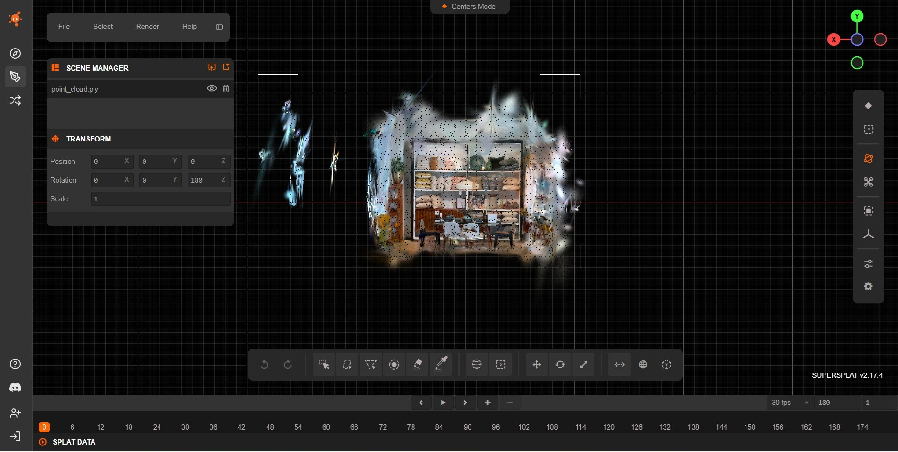
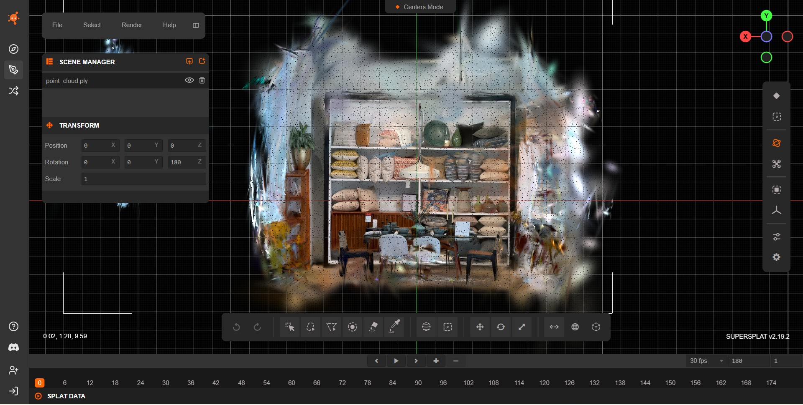
gsplat — Raw Output
The raw gsplat reconstruction presents a clearly defined central core, surrounded by a loose halo of elongated splats and semi-transparent structures, mainly in the upper and lateral regions. These artifacts remain close to the main scene rather than forming large detached clusters.
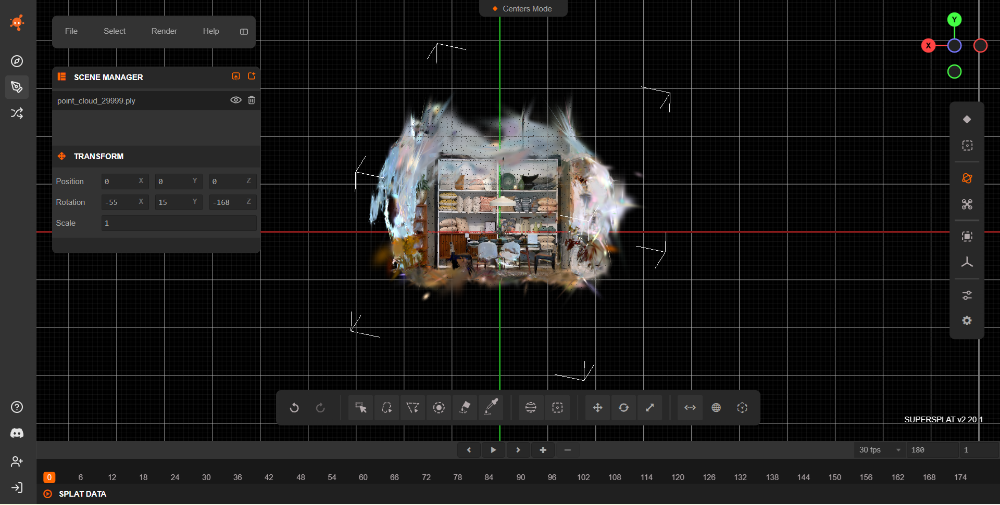
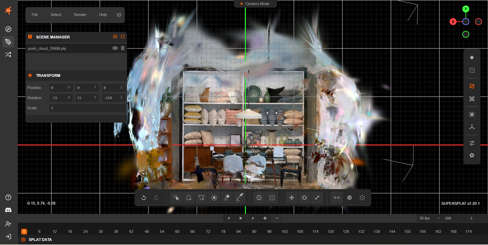
OpenSplat — Raw Output
The raw OpenSplat reconstruction shows a compact central scene core with clearly recognizable geometry, but is surrounded by elongated streak artifacts and detached peripheral clusters that extend the spatial footprint around the main structure.
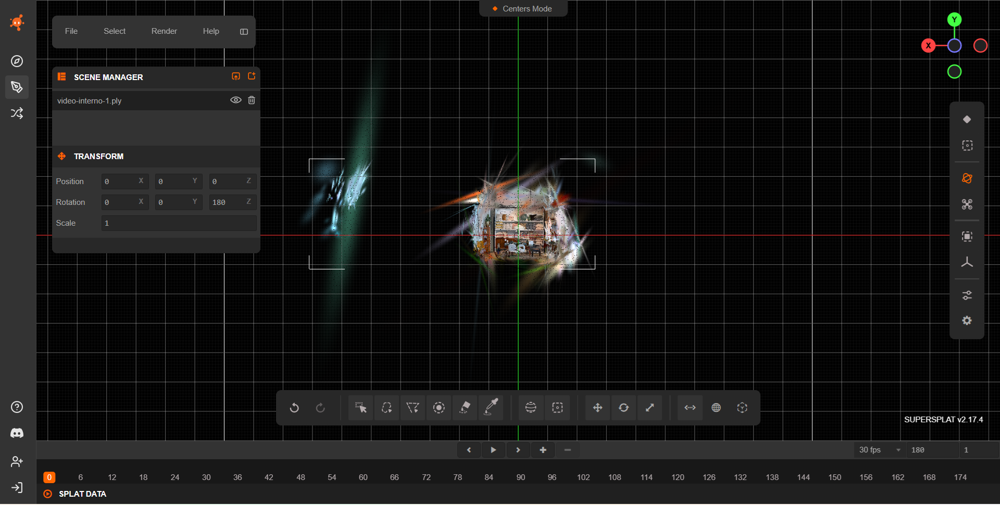

Nerfstudio — Raw Output
The raw Nerfstudio reconstruction exhibits a sparse central scene core surrounded by multiple elongated streak artifacts and isolated peripheral clusters. Thin far-field Gaussians extend well beyond the main interior structure, yielding a fragmented outer envelope and reduced overall compactness.
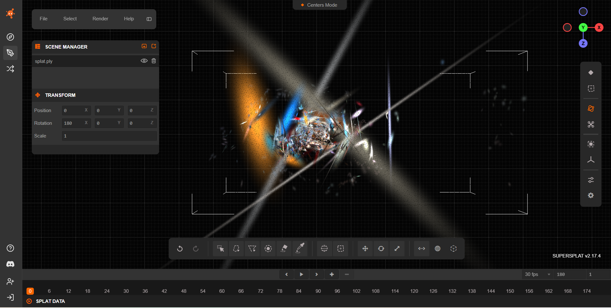

LichtFeld Studio — Raw Output
The raw LichtFeld Studio reconstruction shows a very dense central scene core, surrounded by a broad halo of peripheral outliers and far-field streak artifacts, which markedly increase the overall spatial extent of the model.

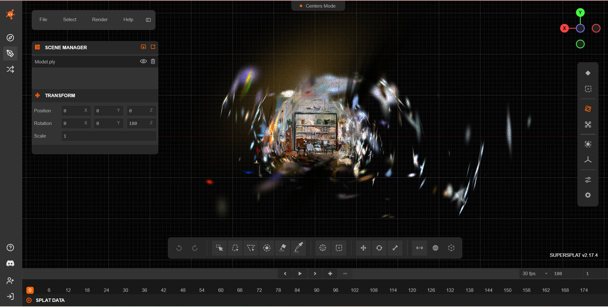
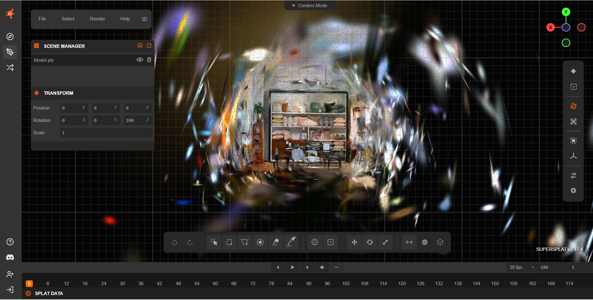
Summary of Visual Findings (Before Cleaning)
Across all raw reconstructions, distinct patterns can be observed in how each pipeline distributes Gaussians around the central scene:
-
Inria gaussian-splatting produced one of the most compact raw models, with a clearly defined scene core and only limited peripheral outliers and thin far-field streaks.
-
OpenSplat retained a relatively concentrated scene core but exhibited larger elongated streak artifacts and scattered peripheral Gaussians around the core.
-
gsplat generated a dense reconstruction with a visible halo of peripheral Gaussians surrounding the scene core, comparable to Inria gaussian-splatting and OpenSplat, but without large detached background clusters.
-
LichtFeld Studio showed the strongest spatial dispersion, combining a very dense scene core with extensive far-field clutter and numerous floating clusters distributed around the core.
-
Nerfstudio produced the sparsest central reconstruction, but still displayed isolated distant clusters and streak-like artifacts that reduce overall compactness compared to Inria gaussian-splatting and OpenSplat.
Scene Cleaning Procedure
After inspecting the raw reconstructions, all scenes were cleaned using SuperSplat in order to reduce outliers and restrict the reconstruction to the indoor region of interest.
The cleaning process was designed to be consistent across all tools and relied on a combination of spatial filtering and attribute-based pruning to remove spurious Gaussians while preserving the main architectural structure of the scene. The reconstructed environment exhibited well-defined spatial boundaries inherent to indoor settings, which made it relatively easy to localize the central scene core and to separate it from peripheral and removable Gaussians.
In particular, the confined nature of the indoor scene allowed for an effective spatial restriction of the region of interest, enabling the removal of a large number of removable Gaussians without compromising walls, furniture, or other structural elements. As a result, filtering operations could be applied in a controlled manner, with their effects being straightforward to visually assess and validate.
In particular, the following operations were applied:
- Spatial restriction of the scene volume, by isolating the main indoor region and removing distant background splats outside the room boundaries.
- Distance-based pruning, aimed at deleting Gaussians located far from the main reconstructed volume.
- Opacity-based filtering, removing low-opacity Gaussians that contributed negligibly to rendering but increased clutter and memory usage.
- Scale-based filtering on the Gaussian axes (scale x, y, z), used to eliminate streaks and spike-like artifacts.
- Surface-area filtering, targeting oversized Gaussians that spanned large regions of space and typically represented poorly constrained geometry.
- Manual inspection and refinement, performed to ensure that walls, furniture, and major structural elements were preserved.
- Export of the cleaned models as new
.ply.
This cleaning stage was applied uniformly to all reconstructions in order to enable a fair qualitative comparison between raw and post-processed outputs.
Scene Cleaning Evaluation
Expand to view cleaning impact table and chart.
This table quantifies the impact of SuperSplat-based cleaning by comparing each raw reconstruction against its cleaned counterpart.
| Tool | Raw Gaussians | Cleaned Gaussians | Δ Gaussians (%) | Raw Size (MB) | Cleaned Size (MB) | Δ Size (%) |
|---|---|---|---|---|---|---|
| Inria gaussian-splatting | 955,819 | 518,140 | −45.8% | 226.1 | 122.6 | −45.8% |
| gsplat | 1,265,239 | 690,776 | −45.4% | 284.8 | 155.5 | −45.4% |
| OpenSplat | 510,870 | 402,531 | −21.2% | 120.8 | 95.2 | −21.2% |
| Nerfstudio | 170,150 | 126,841 | −25.4% | 40.2 | 30.0 | −25.4% |
| LichtFeld Studio | 1,000,000 | 800,515 | −20.0% | 236.5 | 189.3 | −20.0% |
- Δ Gaussians (%) indicates the relative change in the number of Gaussians after cleaning with respect to the raw reconstruction.
- Δ Size (%) reports the relative reduction in file size after cleaning, measured on the exported .ply models.
Quantitative Visualizations
xychart-beta
title "Indoor — Cleaning Impact (Δ Gaussians %)"
x-axis ["Inria","gsplat","OpenSplat","Nerfstudio","LichtFeld"]
y-axis "% removed" 0 --> 60
bar [45.8,45.4,21.2,25.4,20.0]Observations
-
gsplat exhibits the largest absolute reductions both in splat count and file size, while Inria gaussian-splatting shows the largest percentage reduction (≈ −45%) across both metrics.
-
OpenSplat shows a moderate reduction (≈ −21%) in both file size and splat count, indicating more conservative cleaning operations compared to Inria gaussian-splatting and gsplat.
-
Nerfstudio exhibits a consistent decrease in both metrics while maintaining the most compact absolute representation in terms of final file size.
-
LichtFeld Studio undergoes limited but noticeable reductions (≈ −20%) in both metrics, comparable to OpenSplat but starting from a substantially larger raw model.
Visual Inspection — After Cleaning
This section focuses exclusively on the post-cleaning appearance of each model, highlighting changes in spatial compactness, peripheral noise removal, and preservation of structural detail.
This section presents both screenshots and screen-recorded orbit videos captured in SuperSplat after the cleaning procedure.
Expand to view cleaned reconstruction screenshots and videos per tool.
Inria gaussian-splatting — Cleaned Output
The cleaned Inria gaussian-splatting reconstruction preserves the compact central scene volume and clearly recognizable furniture geometry. The previously detached cluster on the left side is no longer visible, and the thin elongated Gaussians forming far-field artifacts around the core are largely removed. The overall spatial extent is further reduced, resulting in a tighter and more spatially focused reconstruction.
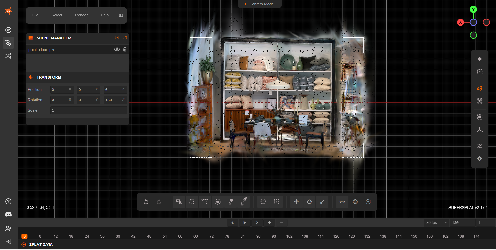
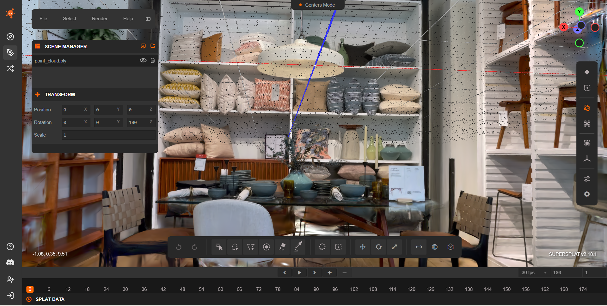
https://github.com/user-attachments/assets/978274ee-fd2b-4a49-ab45-47e485ae0420
gsplat — Cleaned Output
The cleaned gsplat reconstruction shows a markedly more compact central scene volume. Most of the loose halo of elongated splats and semi-transparent structures has been removed, particularly in the upper and lateral regions. The remaining Gaussians are tightly clustered around the main furniture geometry, with only a few faint peripheral streaks persisting near the scene margins and no clearly detached background clusters visible.
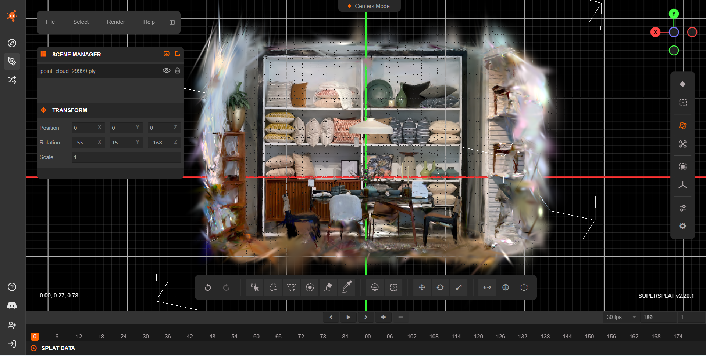
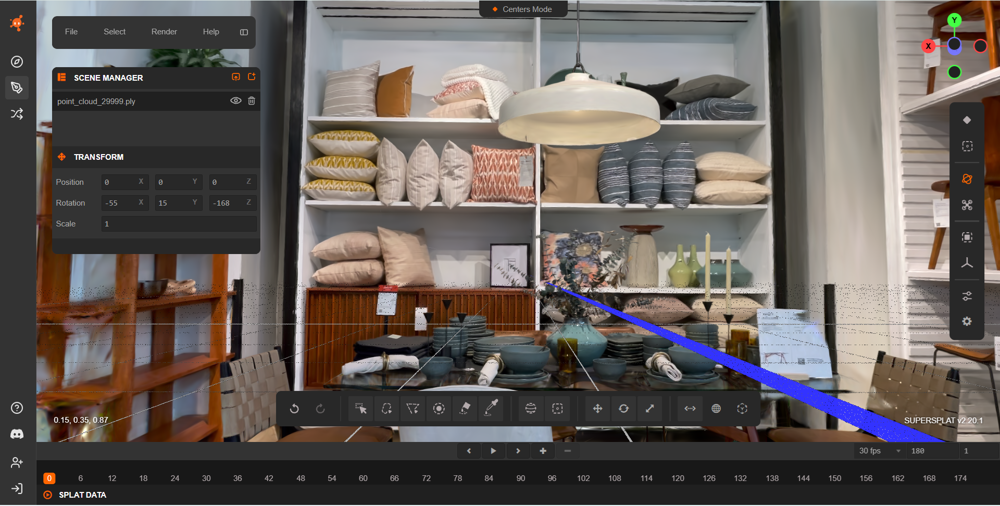
https://github.com/user-attachments/assets/52903544-0081-4fda-bc09-5f5cf14f5438
OpenSplat — Cleaned Output
The cleaned OpenSplat reconstruction shows a sharply delimited central scene core with Gaussians concentrated almost exclusively within the true interior region. The overall spatial extent is strongly reduced, with most elongated streak artifacts and detached peripheral clusters removed, leaving only minor residual outliers near the scene boundaries.
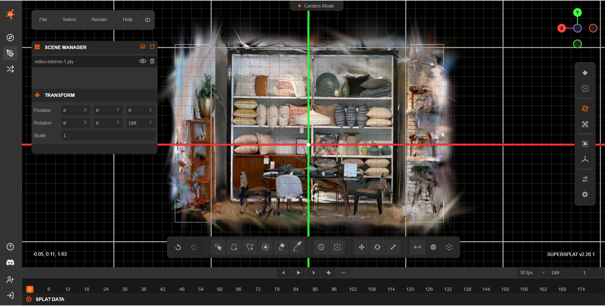
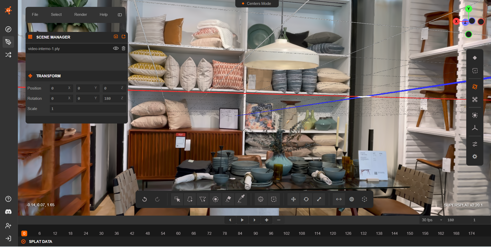
https://github.com/user-attachments/assets/b99ac571-9364-4af1-9bc2-538ebe8a8344
Nerfstudio — Cleaned Output
The cleaned Nerfstudio reconstruction presents a highly compact central scene core with a strongly reduced spatial footprint. Most elongated streak artifacts and detached far-field clusters visible in the raw output are removed, resulting in a tightly cropped volume that preserves the main architectural structures of the interior scene.
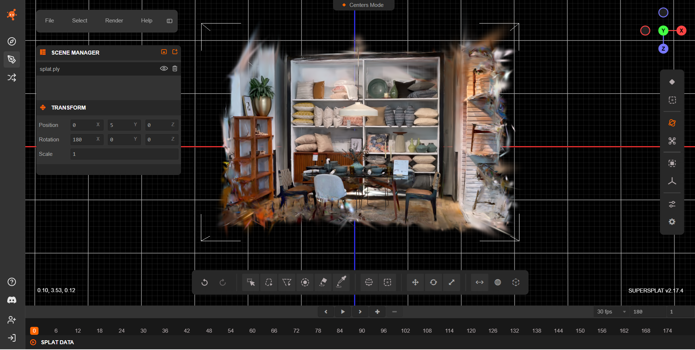
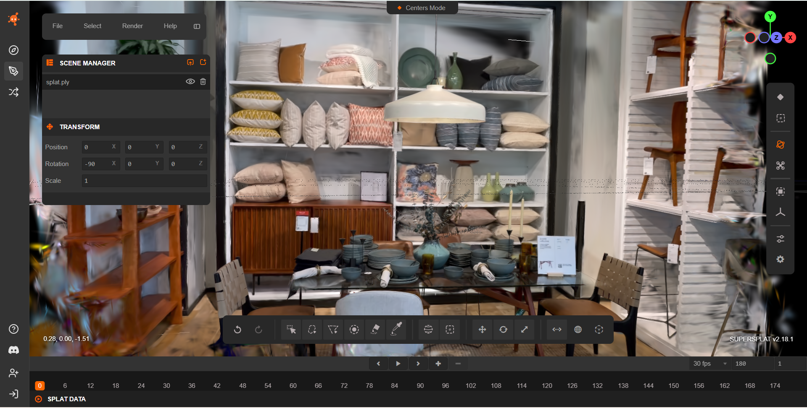
https://github.com/user-attachments/assets/880a85ce-ecfc-4653-ad6b-e24bb658ed49
LichtFeld Studio — Cleaned Output
The cleaned LichtFeld Studio reconstruction presents a compact central scene volume with a strongly reduced spatial footprint. Most peripheral outliers and far-field streak artifacts are removed, although a faint residual halo remains near the scene boundaries, indicating conservative final pruning while preserving dense interior geometry.
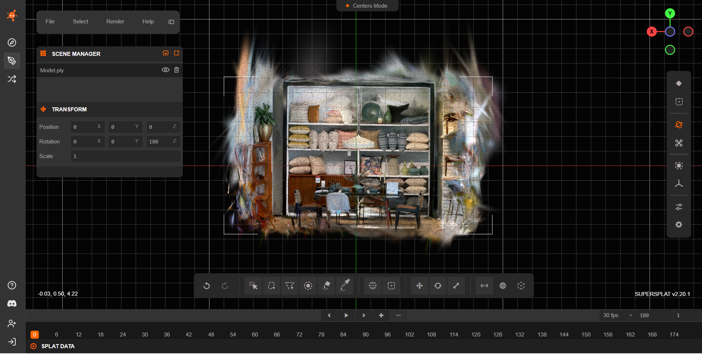
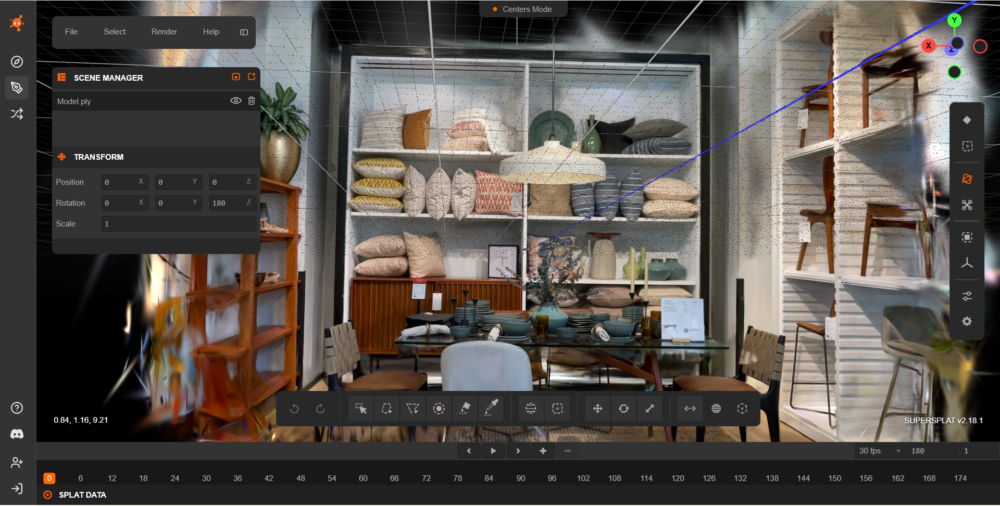
https://github.com/user-attachments/assets/0363dd17-6705-4a65-b7c4-8bd875d3a325
Summary of Visual Findings (After Cleaning)
After cleaning, the five pipelines exhibit different balances between noise removal, spatial compactness, and reconstruction density:
-
Inria gaussian-splatting and OpenSplat, which already produced relatively compact raw reconstructions, further reduce their overall spatial extent after cleaning, leaving only minor peripheral remnants near the scene boundaries.
-
gsplat, which initially exhibited a moderate halo of peripheral splats, converges to a compact scene volume after cleaning.
-
Nerfstudio, which originally displayed sparse reconstructions with isolated distant clusters, presents a tightly cropped scene after cleaning while preserving the main architectural and furniture structures.
-
LichtFeld Studio, previously characterized by very large spatial extent and heavy far-field clutter, now shows a substantially tighter reconstruction.
Summary
-
The indoor scene yields spatially compact raw reconstructions across most pipelines.
-
Scene cleaning is generally straightforward, thanks to well-defined spatial limits.
-
Quantitatively, Inria gaussian-splatting and gsplat experience the largest relative reductions after cleaning (≈ −45%), reflecting the presence of removable peripheral splats in their raw outputs.
-
OpenSplat and LichtFeld Studio undergo more moderate pruning (≈ −21% and ≈ −20%), suggesting that a larger fraction of their Gaussians already contributes to the retained interior structure.
-
Nerfstudio remains the most compact pipeline both before and after cleaning, with limited absolute size and a moderate relative reduction.
-
After post-processing, all methods converge toward tightly bounded reconstructions focused on the interior volume, with only minor residual artifacts near scene boundaries.
-
Overall, the indoor benchmark highlights differences in raw artifact distributions while demonstrating that confined environments strongly facilitate aggressive and reliable post-processing.